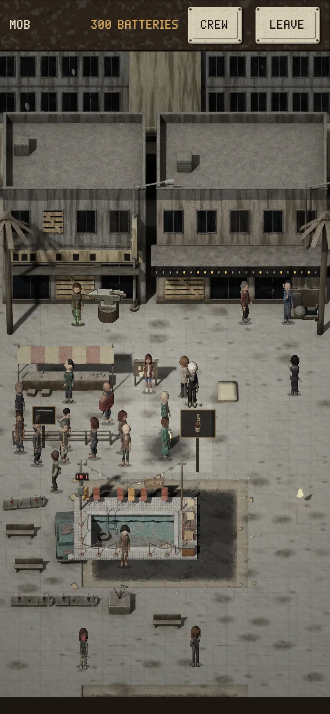
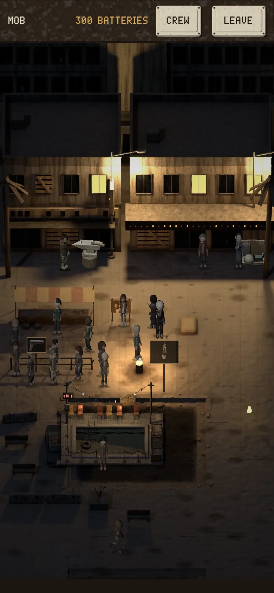
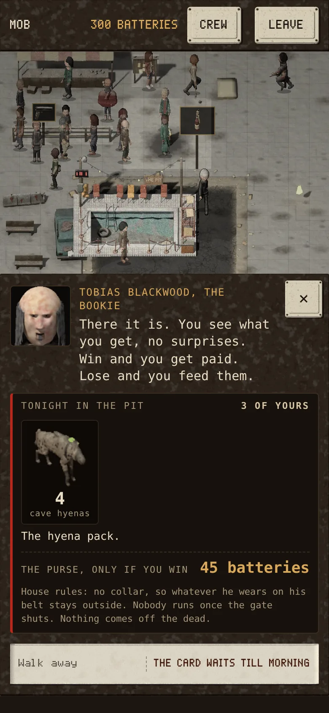
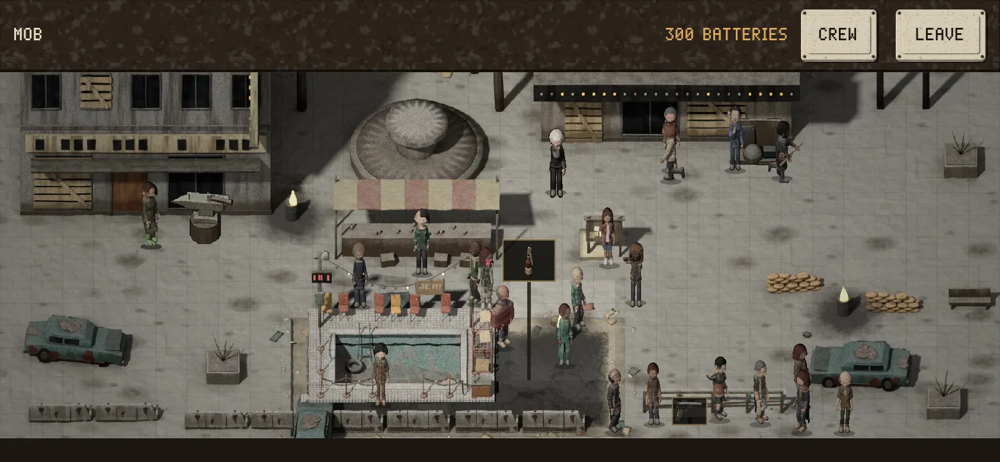
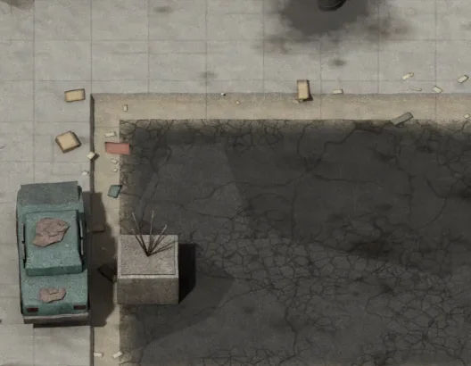
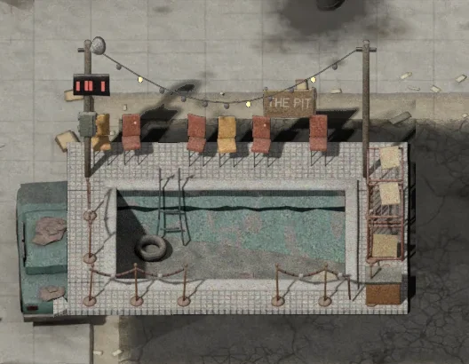

THE PIT
The Mob's arena is on its town screen now: a hotel pool drained to its tiles, the old casino's velvet ropes taped where they snapped, two poles with a string of bulbs where three still work, a breaker box held shut with a belt, a generator they can't always feed, two patched cages, a row of mismatched casino chairs and a sign painted by hand. Tap it and the bookie shows you tonight's card: who, how many, and the purse.






Next: pick your three on one screen of big faces (the accessory crossed out), then the fight in the pit with the crowd. Battle Brothers' arena is the floor: you see the whole card before you sign, one card a day, paid only on a win.